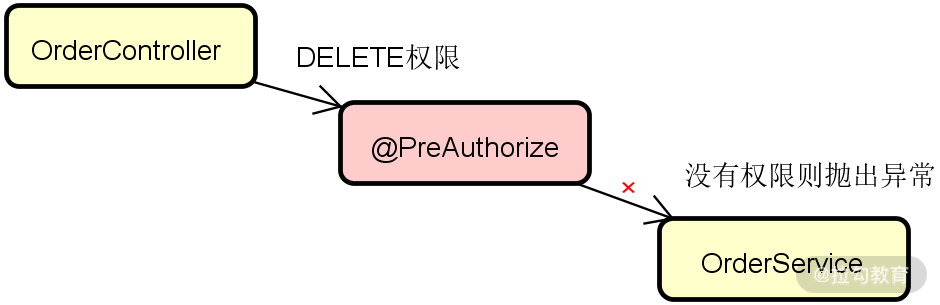
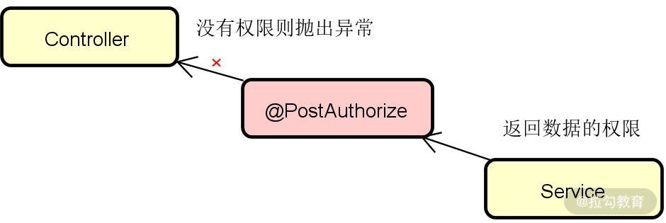
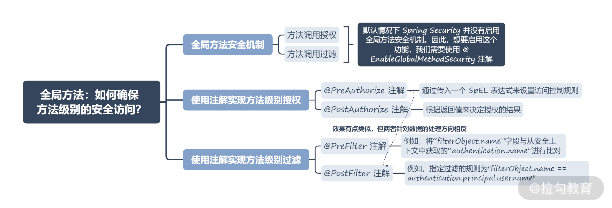

- 00 开篇词 Spring Security，为你的应用安全与职业之路保驾护航.md.html
- 01 顶级框架：Spring Security 是一款什么样的安全性框架？.md.html
- 02 用户认证：如何使用 Spring Security 构建用户认证体系？.md.html
- 03 认证体系：如何深入理解 Spring Security 用户认证机制？.md.html
- 04 密码安全：Spring Security 中包含哪些加解密技术？.md.html
- 05 访问授权：如何对请求的安全访问过程进行有效配置？.md.html
- 06 权限管理：如何剖析 Spring Security 的授权原理？.md.html
- 07 案例实战：使用 Spring Security 基础功能保护 Web 应用.md.html
- 08 管道过滤：如何基于 Spring Security 过滤器扩展安全性？.md.html
- 09 攻击应对：如何实现 CSRF 保护和跨域 CORS？.md.html
- 10 全局方法：如何确保方法级别的安全访问？.md.html
- 11 案例实战：使用 Spring Security 高级主题保护 Web 应用.md.html
- 12 开放协议：OAuth2 协议解决的是什么问题？.md.html
- 13 授权体系：如何构建 OAuth2 授权服务器？.md.html
- 14 资源保护：如何基于 OAuth2 协议配置授权过程？.md.html
- 15 令牌扩展：如何使用 JWT 实现定制化 Token？.md.html
- 16 案例实战：基于 Spring Security 和 Spring Cloud 构建微服务安全架构.md.html
- 17 案例实战：基于 Spring Security 和 OAuth2 实现单点登录.md.html
- 18 技术趋势：如何为 Spring Security 添加响应式编程特性？.md.html
- 19 测试驱动：如何基于 Spring Security 测试系统安全性？.md.html
- 20 结束语 以终为始，Spring Security 的学习总结.md.html
10 全局方法：如何确保方法级别的安全访问？
到目前为止，我们已经系统介绍了 Spring Security 中的认证和授权过程。但是请注意，我们讨论的对象是 Web 应用程序，也就是说认证和授权的资源是一系列的 HTTP 端点。那么如果我们开发的不是一个 Web 应用程序呢？认证和授权还能否发挥作用呢？答案是肯定的。今天我们就来讨论针对方法级别的安全访问策略，确保一个普通应用程序中的每个组件都能具备安全性保障。
全局方法安全机制
明确方法级别的安全机制之前，我们先来剖析一个典型的应用程序具备的各层组件。以 Spring Boot 应用程序为例，我们可以采用经典的分层架构，即将应用程序分成 Web 层、Service 层和 Repository 层。请注意，三层架构中的 Service 层组件可能还会调用其他的第三方组件。
在各层组件中，围绕某个业务链路提供了对应的实现方法，我们可以针对这些方法开展安全控制。因此，你可以认为这种安全控制不仅面向 Web 层组件，而且是全局方法级别的，所以也被称为全局方法安全（Global Method Security）机制。
那么，全局方法安全机制能为我们带来什么价值呢？通常包括两个方面，即方法调用授权和方法调用过滤。
方法调用授权的含义很明确，与端点级别的授权机制一样，我们可以用它来确定某个请求是否具有调用方法的权限。如果是在方法调用之前进行授权管理，就是预授权（PreAuthorization）；如果是在方法执行完成后来确定是否可以访问方法返回的结果，一般称之为后授权（PostAuthorization）。
方法调用过滤本质上类似于过滤器机制，也可以分为 PreFilter 和 PostFilter 两大类。其中预过滤（PreFilter）用来对该方法的参数进行过滤，从而获取其参数接收的内容，而后过滤（PostFilter）则用来判断调用者可以在方法执行后从方法返回结果中接收的内容。
请注意，默认情况下 Spring Security 并没有启用全局方法安全机制。因此，想要启用这个功能，我们需要使用**@EnableGlobalMethodSecurity 注解**。正如本专栏前面案例所展示的，一般的做法是创建一个独立的配置类，并把这个注解添加在配置类上，如下所示：
@Configuration
@EnableGlobalMethodSecurity(prePostEnabled = true)
public class SecurityConfig
请注意，在使用 @EnableGlobalMethodSecurity 注解时，我们设置了“prePostEnabled”为 true，意味着我们启用了 Pre/PostAuthorization 注解，而默认情况下这些注解也是不生效的。同时，我们也需要知道，在 Spring Security 中为实现全局方法安全机制提供了三种实现方法，除了 Pre/PostAuthorization 注解之外，还可以使用基于 JSR 250 规范的 @RolesAllowed 注解和 @Secured 注解。在本专栏中，我们只讨论最常用的 Pre/PostAuthorization 注解，下面我们来看具体的使用方法。
使用注解实现方法级别授权
针对方法级别授权，Spring Security 提供了 @PreAuthorize 和 @PostAuthorize 这两个注解，分别用于预授权和后授权。
@PreAuthorize 注解
先来看 @PreAuthorize 注解的使用场景。假设在一个基于 Spring Boot 的 Web 应用程序中，存在一个 Web 层组件 OrderController，该 Controller 会调用 Service 层的组件 OrderService。我们希望对访问 OrderService 层中方法的请求添加权限控制能力，即只有具备“DELETE”权限的请求才能执行 OrderService 中的 deleteOrder() 方法，而没有该权限的请求将直接抛出一个异常，如下图所示：

Service 层组件预授权示意图
显然，上述流程针对的是预授权的应用场景，因此我们可以使用 @PreAuthorize 注解，
该注解定义如下：
@Target({ ElementType.METHOD, ElementType.TYPE })
@Retention(RetentionPolicy.RUNTIME)
@Inherited
@Documented
public @interface PreAuthorize {
//通过SpEL表达式设置访问控制
String value();
}
可以发现，@PreAuthorize 注解与[ 05 讲“访问授权：如何对请求的安全访问过程进行有效配置？”]中介绍的 access() 方法的原理是一样的，都是通过传入一个 SpEL 表达式来设置访问控制规则。
要想在应用程序中集成 @PreAuthorize 注解，我们可以创建如下所示的安全配置类，在这个配置类上我们添加了 @EnableGlobalMethodSecurity 注解：
@Configuration
@EnableGlobalMethodSecurity(prePostEnabled = true)
public class SecurityConfig {
@Bean
public UserDetailsService userDetailsService() {
UserDetailsService service = new InMemoryUserDetailsManager();
UserDetails u1 = User.withUsername("jianxiang1")
.password("12345")
.authorities("WRITE")
.build();
UserDetails u2 = User.withUsername("jianxiang2")
.password("12345")
.authorities("DELETE")
.build();
service.createUser(u1);
service.createUser(u2);
return service;
}
@Bean
public PasswordEncoder passwordEncoder() {
return NoOpPasswordEncoder.getInstance();
}
}
这里，我们创建了两个用户“jianxiang1”和“jianxiang2”，分别具备“WRITE”和“DELETE”权限。然后，我们实现 OrderService 的 deleteOrder() 方法，如下所示：
@Service
public class OrderService {
@PreAuthorize("hasAuthority('DELETE')")
public void deleteOrder(String orderId) {
…
}
}
可以看到，这里使用了 @PreAuthorize 注解来实现预授权。在该注解中，我们通过熟悉的 hasAuthority('DELETE') 方法来判断请求是否具有“DELETE”权限。
上面介绍的这种情况比较简单，我们再来看一个比较复杂的场景，该场景与用户认证过程进行整合。
假设在 OrderService 中存在一个 getOrderByUser(String user) 方法，而出于系统安全性的考虑，我们希望用户只能获取自己创建的订单信息，也就是说我们需要校验通过该方法传入的“user”参数是否为当前认证的合法用户。这种场景下，我们就可以使用 @PreAuthorize 注解：
@PreAuthorize("#name == authentication.principal.username")
public List<Order> getOrderByUser(String user) {
…
}
这里我们将输入的“user”参数与通过 SpEL 表达式从安全上下文中获取的“authentication.principal.username”进行比对，如果相同就执行正确的方法逻辑，反之将直接抛出异常。
@PostAuthorize 注解
相较 @PreAuthorize 注解，@PostAuthorize 注解的应用场景可能少见一些。有时我们允许调用者正确调用方法，但希望该调用者不接受返回的响应结果。这听起来似乎有点奇怪，但在那些访问第三方外部系统的应用中，我们并不能完全相信返回数据的正确性，也有对调用的响应结果进行限制的需求，@PostAuthorize 注解为我们实现这类需求提供了很好的解决方案，如下所示：

Service 层组件后授权示意图
为了演示 @PostAuthorize 注解，我们先来设定特定的返回值。假设我们存在如下所示的一个 Author 对象，保存着该作者的姓名和创作的图书作品：
public class Author {
private String name;
private List<String> books;
}
进一步，我们假设系统中保存着如下所示的两个 Author 对象：
Map<String, Author> authors =
Map.of("AuthorA", new Author("AuthorA ",List.of("BookA1", “BookA2)),"AuthorB", new Author("AuthorB", List.of("BookB1")
)
);
现在，我们有这样一个根据姓名获取 Author 对象的查询方法：
@PostAuthorize("returnObject.books.contains('BookA2')")
public Author getAuthorByNames(String name) {
return authors.get(name);
}
可以看到，通过使用 @PostAuthorize 注解，我们就能根据返回值来决定授权的结果。在这个示例中，借助于代表返回值的“returnObject”对象，如果我们使用创作了“BookA2”的“AuthorA”来调用这个方法，就能正常返回数据；如果使用“AuthorB”，就会报 403 异常。
使用注解实现方法级别过滤
针对方法级别过滤，Spring Security 同样提供了一对注解，即分别用于预过滤和后过滤的 @PreFilter 和 @PostFilter。
@PreFilter 注解
在介绍使用 @PreFilter 注解实现方法级别过滤之前，我们先要明确它与 @PreAuthorize 注解之间的区别。通过预授权，如果方法调用的参数不符合权限规则，那么这个方法就不会被调用。而使用预过滤，方法调用是一定会执行的，但只有那些符合过滤规则的数据才会正常传递到调用链路的下一层组件。
接下来我们看 @PreFilter 注解的使用方法。我们设计一个新的数据模型，并构建如下所示的 Controller 层方法：
@Autowired
private ProductService productService;
@GetMapping("/sell")
public List<Product> sellProduct() {
List<Product> products = new ArrayList<>();
products.add(new Product("p1", "jianxiang1"));
products.add(new Product("p2", "jianxiang2"));
products.add(new Product("p3", "jianxiang3"));
return productService.sellProducts(products);
}
上面代码中的 Product 对象包含了商品的编号和用户名。然后，我们来到 Service 层组件，实现如下所示的方法：
@PreFilter("filterObject.name == authentication.name")
public List<Product> sellProducts(List<Product> products) {
return products;
}
这里我们使用了 @PreFilter 注解对输入数据进行了过滤。通过使用“filterObject”对象，我们可以获取输入的 Product 数据，然后将“filterObject.name”字段与从安全上下文中获取的“authentication.name”进行比对，就能将那些不属于当前认证用户的数据进行过滤。
@PostFilter 注解
同样，为了更好地理解 @PostFilter 注解的含义，我们也将它与 @PostAuthorize 注解进行对比。类似的，通过后授权，如果方法调用的参数不符合权限规则，那么这个方法就不会被调用。如果使用后过滤，方法调用也是一定会执行的，但只有那些符合过滤规则的数据才会正常返回。
@PostFilter 注解的使用方法也很简单，示例如下：
@PostFilter("filterObject.name == authentication.principal.username")
public List<Product> findProducts() {
List<Product> products = new ArrayList<>();
products.add(new Product("p1", "jianxiang1"));
products.add(new Product("p2", "jianxiang2"));
products.add(new Product("p3", "jianxiang3"));
return products;
}
通过 @PostFilter，我们指定了过滤的规则为"filterObject.name == authentication.principal.username"，也就是说该方法只会返回那些属于当前认证用户的数据，其他用户的数据会被自动过滤。
通过上述案例，你可能已经认识到了各个注解之间的微妙关系。比方说，@PreFilter 注解的效果实际上和 @PostAuthorize 注解的效果有点类似，但两者针对数据的处理方向是相反的，即 @PreFilter 注解控制从 Controller 层到 Service 层的数据输入，而 @PostAuthorize 反过来限制了从 Service 层到 Controller 层的数据返回。在日常开发过程中，你需要关注业务场景下数据的流转方向，才能正确选择合适的授权或过滤注解。
小结与预告
这一讲我们关注的重点从 HTTP 端点级别的安全控制转换到了普通方法级别的安全控制。Spring Security 内置了一组非常实用的注解，方便开发人员实现全局方法安全机制，包括用于实现方法级别授权的 @PreAuthorize 和 @PostAuthorize 注解，以及用于实现方法级别过滤的 @PreFilter 注解和 @PostFilter 注解。我们针对这些注解的使用方法也给出了相应的描述和示例代码。
本讲内容总结如下：

这里给你留一道思考题：针对 Spring Security 提供的全局方法安全机制，你能描述方法级别授权和方法级别过滤的区别以及它们各自的应用场景吗？欢迎在留言区写下你的想法。